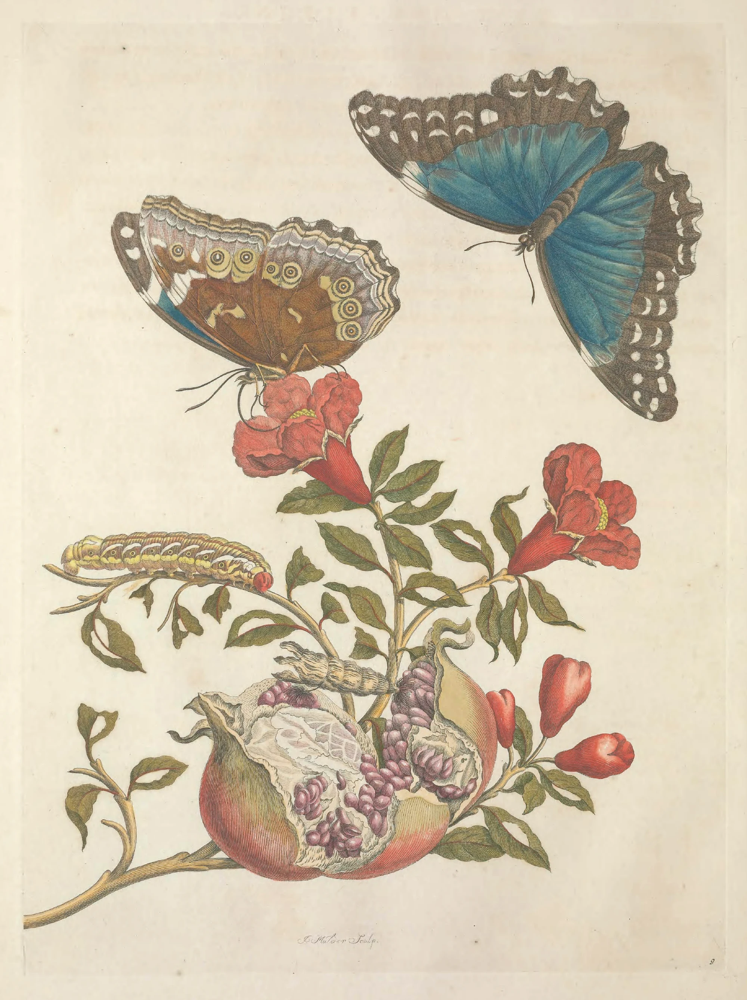

In June 1699 Maria Sibylla Merian, fifty-two years old, sailed from Amsterdam for Surinam with her younger daughter, Dorothea Maria. She had sold most of her paintings and her collection to pay for the passage. For years she had looked at the insects of that colony in the cabinets of Amsterdam collectors, pinned in rows or floating in jars of spirits, beautiful and dead, with nothing to say what they had eaten or what they had been before. She had spent her life, since she was a girl in Frankfurt keeping silkworms, on exactly that question: what a caterpillar becomes, and on what plant.
They took rooms in Paramaribo, at the mouth of the river, and went upriver to the plantations when they could. Merian kept caterpillars in boxes in the house, fed each on the leaves she had found it on, and wrote down the day it stopped eating, the day it spun or hardened, the day something came out and opened its wings. She painted them on vellum in watercolour with their plant beside them, egg, caterpillar, chrysalis and moth or butterfly on one branch, so that a single sheet held a whole life. She did not do it alone. Indigenous and enslaved African people cut the paths, brought her what they found and told her what the plants were for, and some of what they told her went into her book. In the summer of 1701 the heat and a fever sent her home.
In Amsterdam the watercolours went to three engravers, Joseph Mulder, Pieter Sluyter and Daniel Stoopendaal, who cut them into sixty copper plates. This one is Mulder’s; his name is in the margin under the branch. The plates were inked and printed on large sheets of good paper, and in 1705 the book came out in Latin and in Dutch. A buyer could take it plain, line alone on cream paper, or pay a good deal more to have every plate coloured by hand.

The colouring was done in Merian’s house, by Merian and her daughters, from painted models kept as patterns, so that each copy of a butterfly came out the same blue. It was thin watercolour bound with gum arabic, laid one colour at a time: flat washes brushed up to the engraved line, which held them, and now and then a little over it. The engraver had already done the shading in hatching; the wash only had to give the colour, and the line showed through. Watercolour goes on dark and glossy and dries paler and dull, with the pigment drawn to the rim as the water leaves, and a colourist learned to lay each wash a shade stronger than it was meant to end.
On this sheet a pomegranate splits open under a branch in flower, a pale striped caterpillar along one twig and a chrysalis lying across the fruit. Above them is the morpho twice. Closed, from below, it is brown and eyed like a dry leaf, which is how it rests; open, from above, it is the blue it shows only in flight, the colour the whole page waits for.
A coloured copy cost forty-five guilders or more, more than a skilled worker in Amsterdam earned in two months, and Merian sold them from her house. After her death in 1717 Dorothea sold the copper plates to a publisher, and the book went on being printed, and coloured by other hands, for most of the century. No two copies are quite alike. Put two side by side and the leaves are greener in one and the fruit rosier in the other; a wash runs over the line here and stops short of it there: the hand of whoever sat at the table that day, matching the model as well as they could, waiting for each colour to dry before laying the next.